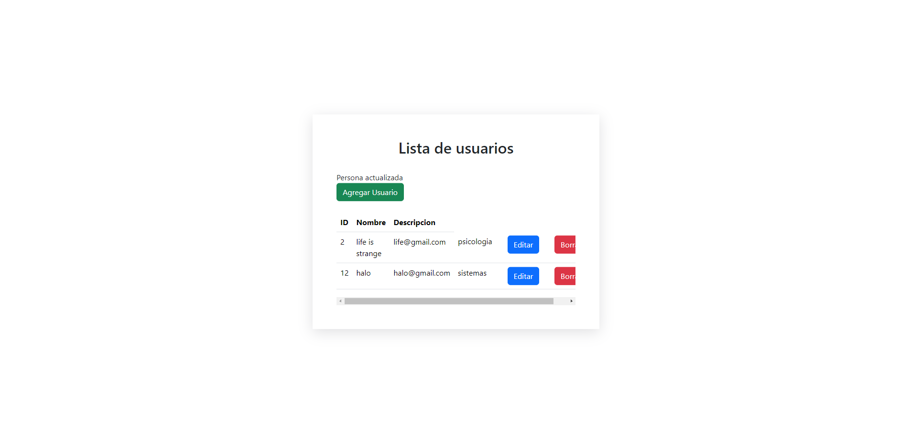
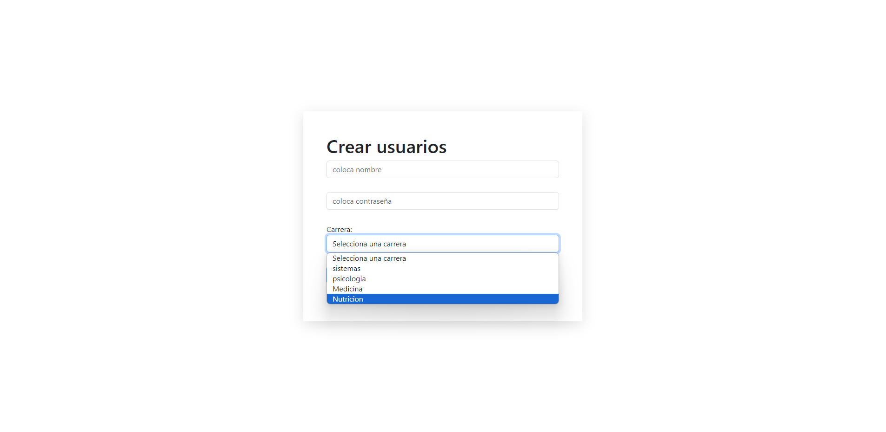
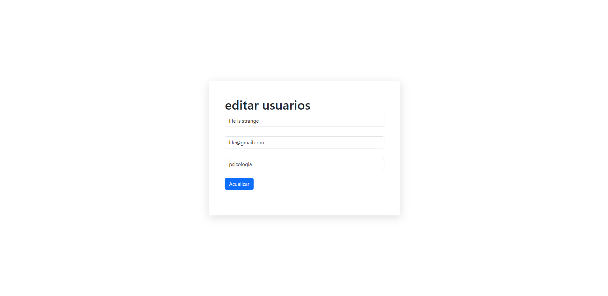

Crud con tablas relacionadas en Html5,Laravel y Mysql. Este crud cuenta con la posibilidad con la cual trabajar con dos tablas de una base de datos, y la tabla principal puede seleccionar un dato de tipo foráneo el cual sirva para la tabla principal.
  